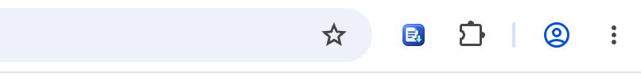
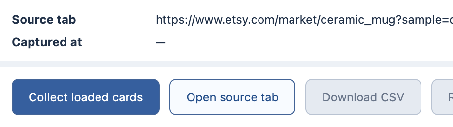
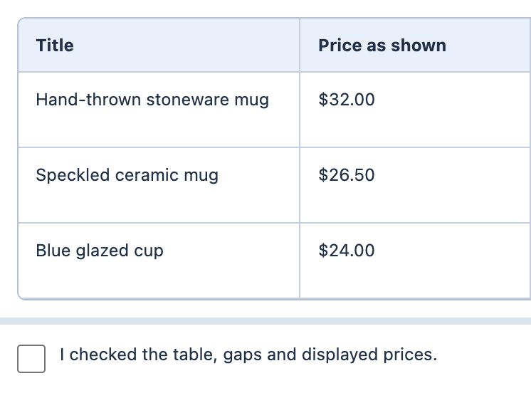

Etsy Scraper
Welcome to Etsy Scraper
Review visible Etsy listings and save them as a CSV.
Already pinned? See how to use it.-
Pin the extension
Click Extensions in the Chrome toolbar, then click the pin beside Etsy Scraper.

-
Open the extension
Open an Etsy results page or shop with visible product cards, then click Etsy Scraper on your Chrome toolbar.

Chrome screenshots
Export your first set of listings
Open a public Etsy search results page or shop with visible product cards.
Try the ceramic mug listings on Etsy
Show how to pin it-
Collect the loaded cards
With the Etsy tab active, click Etsy Scraper on the toolbar or in Chrome’s Extensions menu. In the workspace, click Collect loaded cards.

-
Review the table
Compare the table and its gaps with the source cards. Check the prices as shown on Etsy, then select I checked the table, gaps and displayed prices.

Practice listings in the Etsy Scraper workspace -
Download the CSV
Click Download CSV after reviewing the table. Open the saved file from Chrome’s Downloads.

If the capture has gaps, the button reads Download partial CSV. It saves the captured table with those gaps.